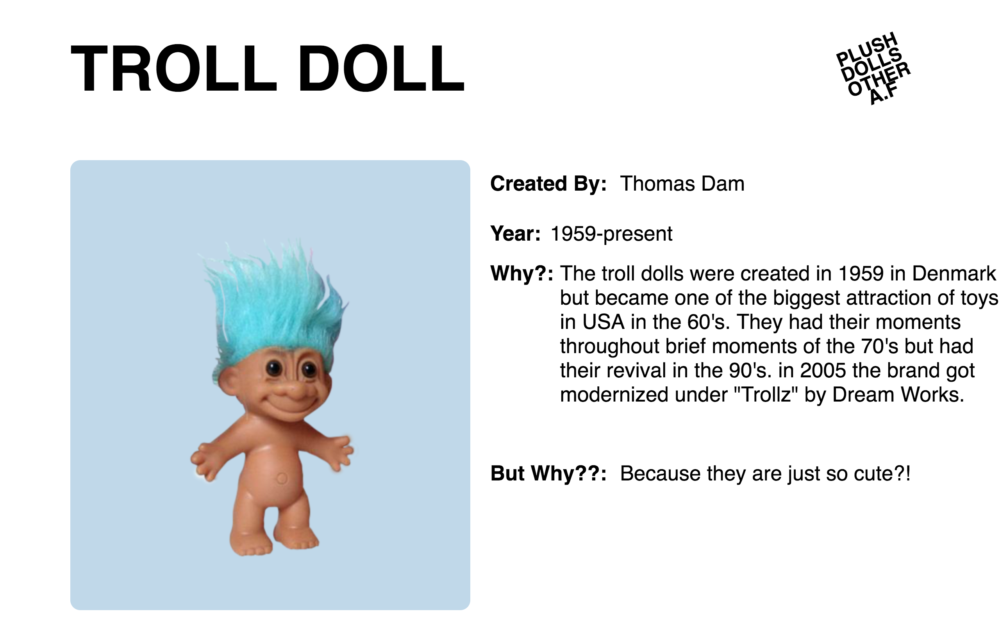

Bizarre Toys is a archive designed by Yaren Kaya. Main aim is to showcase "bizarre" toys in curated groups. Main page consist links to the groups and selected toys.
There are 4 groups: Action Figures, Plush, Dolls and Other. Each group has color coded images. In each group there are dozens of toys.
Each toy has an individual gallery page to give genral information.
